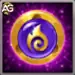

Visão Geral da Facção do Mistério
A Facção do Mistério é uma das mais versáteis e poderosas facções do Hero Wars Alliance, com heróis que possuem habilidades únicas adequadas para uma ampla variedade de situações de batalha. O herói estrela dessa facção é Folio, uma nova adição que se especializa em poderosos danos mágicos e em desestabilizar o time inimigo. Junto com Folio, a Facção do Mistério abriga outros heróis de destaque, como Satori, um assassino de alto nível capaz de eliminar inimigos-chave, e Amira, que se destaca em combater equipes focadas em dano crítico, particularmente da Facção da Honra, como a equipe FART de Artemis.
Heróis Notáveis da Facção do Mistério:
- Folio: Causa dano mágico com ataques poderosos de área e debuffs.
- Satori: Assassino e principal causador de dano.
- Amira: Contrapõe equipes de dano crítico e é uma potência defensiva contra Artemis.
- Heidi: Conhecido por contrapor equipes de esquiva.
- Ziri: O tanque principal da facção, com alta armadura e durabilidade.
- Andvari: Eficaz contra as populares equipes de Karkh.
- Celeste e Martha: Consideradas algumas das melhores curadoras do jogo.
- Lian: Capaz de encantar e controlar inimigos com suas habilidades.
- Rufus: Um tanque imbatível contra equipes de dano mágico.
- Maya: Curandeira com forte dano puro, eficaz contra equipes baseadas em evasão.
Tier List da Facção do Mistério
| Nível | Heróis |
|---|---|
| S | Amira, Cascade, Heidi, Satori |
| A | Ziri, Andvari, Celeste, Martha, Folio |
| B | Lian, Rufus, Maya |
Análise da Raridade das Pedras de Alma
Entender a raridade das pedras de alma de cada herói é crucial para decidir onde gastar suas Moedas do Mistério. Aqui está uma análise da disponibilidade delas:
- Pedras de Alma Raras: Amira, Cascade, Celeste, Folio, Martha (heróis disponíveis apenas no Baú do Evento, embora Martha também esteja disponível na Loja VIP nível 14, e Celeste apareça durante eventos raros).
- Pedras de Alma de Dificuldade Média: Andvari, Maya, Satori, Lian, Rufus, Ziri (disponíveis em várias lojas do jogo).
- Pedras de Alma Fáceis: Heidi (obtidas na campanha principal).
Dica: Se o herói em destaque for raro, priorize a compra de suas pedras de alma na Loja do Mistério. Se o herói for comum, considere focar na compra de itens essenciais de melhoria.
Missões e Recompensas do Evento Caminho do Mistério
As missões do evento Caminho do Mistério recompensam Moedas do Mistério, Pontos de Temporada, Moedas de Artefato e Fragmentos de Relíquia. Use as tabelas abaixo para planejar quais recursos guardar antes do evento começar.
1. Dia após Dia
Disponibilidade da missão: você pode completar estas missões durante o evento especial.
| Missão | Requisito | Recompensa 1 | Recompensa 2 |
|---|---|---|---|
| Faça login durante o evento especial | 1 vez |  Moedas do Mistério x750 |  Pontos de Temporada x20 Pontos de Temporada x20 |
| Faça login durante o evento especial | 2 vezes | Moedas do Mistério x1.000 | Pontos de Temporada x20 |
| Faça login durante o evento especial | 3 vezes | Moedas do Mistério x1.500 | Pontos de Temporada x20 |
| Total de Recompensas | - | Moedas do Mistério x3.250 | Pontos de Temporada x60 |
2. Troca de Valor
Disponibilidade da missão: você pode completar estas missões durante o evento especial.
| Missão | Requisito | Recompensa 1 | Recompensa 2 |
|---|---|---|---|
| Gaste Esmeraldas |  500 500 | Moedas do Mistério x750 |  Moedas de Artefato x200 Moedas de Artefato x200 |
| Gaste Esmeraldas | 1.500 | Moedas do Mistério x1.000 | Pontos de Temporada x75 |
| Gaste Esmeraldas | 3.000 | Moedas do Mistério x1.500 | Moedas de Artefato x400 |
| Gaste Esmeraldas | 5.500 | Moedas do Mistério x2.000 | Pontos de Temporada x75 |
| Gaste Esmeraldas | 10.000 | Moedas do Mistério x2.500 | Moedas de Artefato x600 |
| Gaste Esmeraldas | 15.000 | Moedas do Mistério x3.000 | Pontos de Temporada x75 |
| Gaste Esmeraldas | 20.000 | Moedas do Mistério x3.500 | Moedas de Artefato x800 |
| Gaste Esmeraldas | 26.000 | Moedas do Mistério x4.000 | Pontos de Temporada x80 |
| Gaste Esmeraldas | 32.000 | Moedas do Mistério x4.500 | Moedas de Artefato x1.000 |
| Gaste Esmeraldas | 38.000 | Moedas do Mistério x5.000 | Pontos de Temporada x85 |
| Gaste Esmeraldas | 45.000 | Moedas do Mistério x6.000 | Moedas de Artefato x1.200 |
| Gaste Esmeraldas | 52.000 | Moedas do Mistério x7.000 | Pontos de Temporada x90 |
| Gaste Esmeraldas | 60.000 | Moedas do Mistério x9.000 | Moedas de Artefato x1.400 |
| Gaste Esmeraldas | 68.000 | Moedas do Mistério x9.000 | Pontos de Temporada x95 |
| Gaste Esmeraldas | 78.000 | Moedas do Mistério x10.000 | Moedas de Artefato x2.000 |
| Gaste Esmeraldas | 90.000 | Moedas do Mistério x11.000 | Pontos de Temporada x100 |
| Gaste Esmeraldas | 105.000 | Moedas do Mistério x12.000 | Moedas de Artefato x2.600 |
| Gaste Esmeraldas | 120.000 | Moedas do Mistério x14.000 | Pontos de Temporada x110 |
| Gaste Esmeraldas | 135.000 | Moedas do Mistério x16.000 | Moedas de Artefato x3.500 |
| Gaste Esmeraldas | 150.000 | Moedas do Mistério x18.000 | Pontos de Temporada x115 |
| Total de Recompensas | - | Moedas do Mistério x139.750 | Moedas de Artefato x13.700Pontos de Temporada x900 |
3. Energia da Evolução
Disponibilidade da missão: estas missões podem ser completadas novamente depois de terminar a sequência.
| Missão | Requisito | Recompensa |
|---|---|---|
| Gaste Energia | 100 | Moedas do Mistério x100 |
| Gaste Energia | 200 | Moedas do Mistério x150 |
| Gaste Energia | 300 | Moedas do Mistério x200 |
| Gaste Energia | 500 | Moedas do Mistério x250 |
| Gaste Energia | 700 | Moedas do Mistério x300 |
| Gaste Energia | 1.000 | Moedas do Mistério x350 |
| Gaste Energia | 1.300 | Moedas do Mistério x400 |
| Gaste Energia | 1.600 | Moedas do Mistério x450 |
| Gaste Energia | 1.900 | Moedas do Mistério x500 |
| Gaste Energia | 2.300 | Moedas do Mistério x600 |
| Total de Recompensas | - | Moedas do Mistério x3.300 |
4. Alma Generosa
Disponibilidade da missão: esta sequência de missões pode ser completada todos os dias.
| Missão | Requisito | Recompensa |
|---|---|---|
| Marque Pontos VIP | 100 | Moedas do Mistério x600 |
| Marque Pontos VIP | 200 | Moedas do Mistério x800 |
| Marque Pontos VIP | 400 | Moedas do Mistério x1.300 |
| Marque Pontos VIP | 800 | Moedas do Mistério x2.300 |
| Marque Pontos VIP | 1.600 | Moedas do Mistério x4.500 |
| Marque Pontos VIP | 2.600 | Moedas do Mistério x5.500 |
| Marque Pontos VIP | 4.500 | Moedas do Mistério x10.000 |
| Marque Pontos VIP | 7.000 | Moedas do Mistério x18.000 |
| Marque Pontos VIP | 10.000 | Moedas do Mistério x25.000 |
| Total de Recompensas | - | Moedas do Mistério x68.000 |
5. Artefatos da Valquíria
Disponibilidade da missão: estas missões podem ser completadas novamente depois de terminar a sequência.
| Missão | Requisito | Recompensa |
|---|---|---|
| Abra Baús de Artefato |  3 3 | Moedas do Mistério x150 |
| Abra Baús de Artefato | 5 | Moedas do Mistério x200 |
| Abra Baús de Artefato | 7 | Moedas do Mistério x250 |
| Abra Baús de Artefato | 10 | Moedas do Mistério x300 |
| Abra Baús de Artefato | 15 | Moedas do Mistério x400 |
| Abra Baús de Artefato | 20 | Moedas do Mistério x500 |
| Abra Baús de Artefato | 30 | Moedas do Mistério x1.000 |
| Total de Recompensas | - | Moedas do Mistério x2.800 |
6. Subindo a Torre
Disponibilidade da missão: você pode completar estas missões durante o evento especial.
| Missão | Requisito | Recompensa 1 | Recompensa 2 |
|---|---|---|---|
| Abra baús na Torre | 5 | Moedas do Mistério x500 | - |
| Abra baús na Torre | 10 | Moedas do Mistério x1.000 | Pontos de Temporada x45 |
| Abra baús na Torre | 15 | Moedas do Mistério x1.500 | - |
| Abra baús na Torre | 20 | Moedas do Mistério x2.000 | Pontos de Temporada x60 |
| Abra baús na Torre | 30 | Moedas do Mistério x2.500 |  Fragmentos de Relíquia x2 Fragmentos de Relíquia x2 |
| Abra baús na Torre | 45 | Moedas do Mistério x3.000 | - |
| Abra baús na Torre | 60 | Moedas do Mistério x5.000 | - |
| Total de Recompensas | - | Moedas do Mistério x15.500 | Pontos de Temporada x105Fragmentos de Relíquia x2 |
7. Poder Ascendente
Disponibilidade da missão: você pode completar estas missões durante o evento especial.
| Missão | Requisito | Recompensa 1 | Recompensa 2 |
|---|---|---|---|
| Promova o herói do evento ao rank Verde | Rank 2 | Moedas do Mistério x200 | Pontos de Temporada x35 |
| Promova o herói do evento ao rank Verde | Rank 3 | Moedas do Mistério x250 | - |
| Promova o herói do evento ao rank Azul | Rank 4 | Moedas do Mistério x300 | Pontos de Temporada x40 |
| Promova o herói do evento ao rank Azul | Rank 5 | Moedas do Mistério x400 | - |
| Promova o herói do evento ao rank Azul | Rank 6 | Moedas do Mistério x600 | - |
| Promova o herói do evento ao rank Roxo | Rank 7 | Moedas do Mistério x800 | Pontos de Temporada x45 |
| Promova o herói do evento ao rank Roxo | Rank 8 | Moedas do Mistério x1.000 | Fragmentos de Relíquia x3 |
| Promova o herói do evento ao rank Roxo | Rank 9 | Moedas do Mistério x1.200 | - |
| Promova o herói do evento ao rank Roxo | Rank 10 | Moedas do Mistério x1.400 | - |
| Promova o herói do evento ao rank Laranja | Rank 11 | Moedas do Mistério x1.600 | Pontos de Temporada x50 |
| Promova o herói do evento ao rank Laranja | Rank 12 | Moedas do Mistério x1.800 | - |
| Promova o herói do evento ao rank Laranja | Rank 13 | Moedas do Mistério x2.000 | - |
| Promova o herói do evento ao rank Laranja | Rank 14 | Moedas do Mistério x2.200 | - |
| Promova o herói do evento ao rank Laranja | Rank 15 | Moedas do Mistério x2.500 | Pontos de Temporada x55 |
| Total de Recompensas | - | Moedas do Mistério x16.250 | Pontos de Temporada x225Fragmentos de Relíquia x3 |
Guia da Loja do Evento
A Loja do Caminho do Mistério oferece uma variedade de itens para compra, incluindo equipamentos, artefatos e Bonecas Demoníacas. Essas bonecas contêm uma variedade de recompensas, como pedras de alma de heróis, ouro e baús de artefatos.
Compras Recomendadas
- Caixas de Artefato: Estas são uma compra essencial. Investir em fragmentos de artefato, especialmente os laranja, trará grandes benefícios a longo prazo. Artefatos laranja são mais difíceis de obter, mas são necessários para melhorar o equipamento dos seus heróis.
- Artefatos Específicos do Evento: Foque em adquirir a arma, o livro e o anel do herói em destaque. Esses itens geralmente são mais raros e difíceis de obter durante o jogo normal.
Itens a Evitar
- Equipamento de Herói Azul, Roxo e Laranja: Esses itens são melhores obtidos através do gasto regular de energia nas campanhas. Compre-os na loja do evento apenas se for absolutamente necessário.
Planejamento Estratégico para o Evento
Antes de participar do evento Caminho do Mistério, reserve um tempo para se preparar verificando o calendário de eventos do Hero Wars Alliance no site Alexandre Games. Planejar com antecedência garantirá que você tenha os recursos necessários para aproveitar ao máximo o evento. Guarde esferas de invocação de Titãs para eventos de heróis e use o Caminho da Honra para fortalecer sua equipe.
Conclusão – Dominando o Caminho do Mistério
O evento "Caminho do Mistério" oferece uma oportunidade de ouro para fortalecer sua equipe, obtendo pedras de alma raras, aprimorando artefatos e coletando recursos valiosos. Seguindo as estratégias descritas neste guia, você poderá maximizar seus ganhos e garantir que seus heróis da Facção do Mistério estejam prontos para qualquer desafio no Hero Wars Alliance.
Com planejamento cuidadoso, gastos inteligentes e uma gestão eficiente de recursos, você navegará neste evento como um profissional, deixando seus heróis da Facção do Mistério mais fortes do que nunca.
 Hero Wars") Como Derrotar Cada Herói - Hero Wars
Como Derrotar Cada Herói - Hero Wars Tier List Hero Wars JvJ
Tier List Hero Wars JvJ